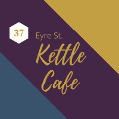

▪ Supervised activities in the kitchen to ensure customer food was prepared to a high-standard.
▪ Led and motivated staff teams to ensure high-levels of customer service and ensured store
cleanliness at all times.
▪ Acted as the first point of contact to resolve any customer complaints / issues.
▪ Assisted management in implementing campaigns for marketing and promotion.
▪ Dealt with all aspects of cash handling and end of day cash ups / reconciliations.
▪ Generated weekly rosters in a timely manner based on forecasted customer demand.
▪ Provided on-the-job practical training to staff in order to continually strive for improvement
and service excellence.
▪ Managed staff holiday, sickness and absence in line with company procedures and protocols.
▪ Ensured strict adherence of Health and Safety guidelines for business compliance.
▪ Liaised with Managers and performed all duties to provide the highest customer service standards
in the hotel.
▪ Managed teams of Waiters / Waitresses to serve food and beverages within required timeframes.
▪ Scheduled table bookings during busy periods and coordinated customer queues / waiting times effectively.
▪ Ensured best practice procedures were adhered to by staff and identified any improvements required.
▪ Handled customer complaints in an effective and professional manner through to resolution.
▪ Troubleshooted operational issues and escalated with senior management if required.
▪ Trained new Waiters / Waitresses on guest service expectations, procedures, food handling techniques and
establishment standards.
▪ Understood customer requirements and provided appropriate advice and guidance on products
in-store.
▪ Held responsibility for operating till systems, serving customers and handling payments.
▪ Consistently strived to overachieve sales targets as per the needs of the store and business.
▪ Developed and used extensive product knowledge to maximise and drive sales growth.
▪ Maintained upkeep of the retail unit to an exceptional level, reflecting a positive image of the company.
▪ Ensured operations were carried out to the highest possible standard and maintained compliance
with H&S policies.
▪ Delivered an outstanding food and beverage service to customers at all times in line with brand
expectations.
▪ Took orders from customers and offered advice on the menu including suggestions to compliment choices.
▪ Undertook regular checks on tables to cater for additional customer requirements.
▪ Prepared accurate bills, presented to customers and processed payments.
▪ Kept the work and surrounding area clean and organised at all times.